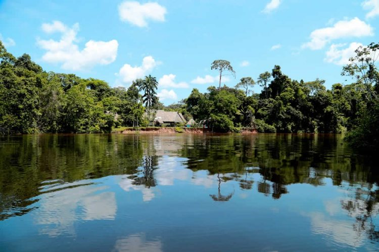

Provincia de Sucumbíos. Es una provincia del nor-oriente del Ecuador. Es una de las principales provincias que proveen al Estado del petróleo que necesita para las exportaciones. Se caracteriza por sus bellos paisajes amazónicos, entre ellos el río Aguarico.
Esta provincia alberga uno de los atractivos más impresionantes de la Amazonia: el bosque inundadle del Cuyabeno. En ese lugar el paisaje cambia con la estación lluviosa. No todo es naturaleza conservada. Destaca la relación del hombre y su medio. Los sionas, secoyas y cofanes luchan por defender su territorio de las actividades petroleras. En contraste está Lago Agrio, la capital provincial, que nació en los 70 con el petróleo y fue el nuevo hogar de los lojanos que buscaban más oportunidades. En esta provincia se encuentra el volcán Reventador (3562m). Sus ríos principales provienen de la cordillera Oriental andina. Entre ellos están el San Miguel, Putumayo, Cuyabeno, Cofanes, Aguarico y Güepí.